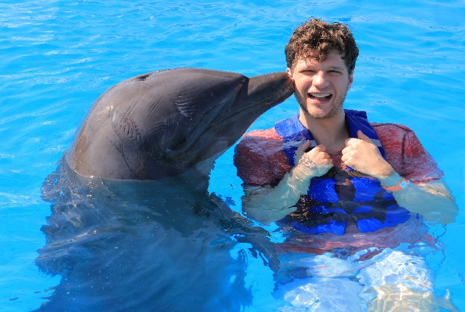

About Me
My name is Garrett. I was born in Orem, Utah but I have since moved to Dallas where I live with my wife. I am currently a student focusing on computer science. I love spending time with my wife and reading.
Dallas, Texas
Dallas-Fort Worth is the 4th largest Metropolitan area in the United States. It is one of the fastest growing cities in the US and has a population of 7,637,387 as of the 2020 census.